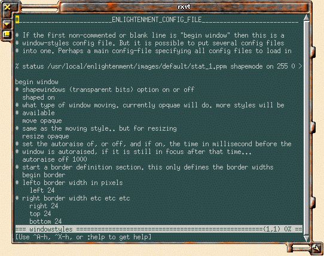

![[ TABLE OF CONTENTS ]](../gx/indexnew.gif)
![[ FRONT PAGE ]](../gx/homenew.gif)


Most of the window-managers available for Linux these days can trace their ancestry back to the original twm program, which may have been the first widely used manager on unix systems. There is a good reason for this, as twm pioneered many of the features taken for granted by users, such as movable, resizable windows and a root-window applications menu. It's good, time-tested code; why reinvent the wheel?
Two programmers have recently done just that, from two perspectives as far removed from each other as their respective geographical locations. Chris Cannam, a British programmer, has taken the minimalist approach with his wm2 manager (which I wrote about in LG #14) and the new wm2 variant wmx, which I discuss elsewhere in this issue.
At the other extreme is the work of a young Australian programmer who likes to be known as the Rasterman. Imagine asking the programmers responsible for the games Quake or Duke Nukem 3D to write a window-manager; the result might bear some resemblance to the fanciful program known as Enlightenment.
I first encountered Enlightenment (what a name! it seems to carry the implication that we users of fvwm et al are still crawling blindly through the primordial ooze...) earlier this year, when a binary was available on the web. I tried it briefly, but at the time I had a 486 machine; it ran slowly for me and seemed to consume great gobs of memory. Recently the Rasterman (his real name is Carsten Haitzler) has rewritten the application from scratch, tightening it up and introducing a new shared lib which handles image loading and rescaling. The memory consumption has been greatly reduced since the initial release. At this point (beta release 4) there are no virtual desktops or root-window menus, but the project looks promising and what there is of it runs well for me.
Enlightenment uses the ppm image format for both window details and icons. An elaborate configuration file (called windowstyles) specifies which image goes where. Each segment of the window border and detailing is a separate ppm file. I haven't made any attempt to modify the default configuration. It looks like it would take many hours to write a new one. Carsten plans on eventually offering configurations which would emulate any of the other window-managers.
I get the impression from the Enlightenment web-page that the ppm format is more efficient than others, especially on 16-32 bit displays. I don't know how valid this is, but the window-manager does seem to do quite a bit of image handling without consuming great amounts of memory.
This window-manager automatically will load any sort of image format as a root background image. At startup the appropriate netpbm utility is summoned to transform the image to the ppm format. Naturally, you need to have the netpbm graphics utility package installed for this to work.
Here is a screenshot of a window under Enlightenment:

XV (with which I made the screenshot) couldn't figure out where the actual window border was; can you blame it? I set the root-window background to be the same color as this HTML-file background as a quick work-around.
The Enlightenment web-site is at http://www.enlightenment.org/. The source for the latest version can be downloaded from the site; the latest news about the application will also be there.
It will be interesting to see what eventually happens with Enlightenment, though personally I'm satisfied with the window-managers I currently use. I just like to see diversity in software for Linux. Fancy new window-borders might seem to be a trivial matter but it is user-interface features such as these which can attract new users, especially younger ones. I showed Enlightenment to my sixteen-year-old son (an avid computer- game player) and he was impressed. His comment was "It looks like a game interface!".
Another factor is the simple human desire for novelty. Sometimes the same old interface becomes boring -- you realize you aren't really even seeing it anymore. A change in background and window-style can be refreshing. People routinely change room interiors for these same reasons and, come to think of it, I look at my computer screen quite a bit more than I do the walls!
Keep in mind that the science-fiction Bladerunneresque appearance is just the default. Enlightenment is a framework and could be configured in a variety of ways, depending upon taste (and how much time you're willing to spend!). Luckily (if you have patience), someone will eventually come up with a configuration which will suit you. or at least be close. Interest seems to be growing in this window-manager lately (judging by the volume of messages in the mailing list) and it may yet evolve into a community-supported window-manager, such as Fvwm2 or Afterstep. It's been released under the Gnu license, but so far Carsten Haitzler is the sole developer.